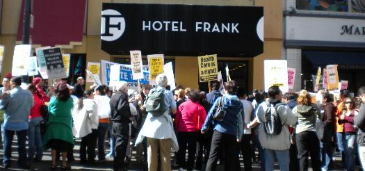

Hotel Frank(enstein) becomes Hotel G(oofy)
Submitted on Sun, 09/13/2015 - 1:17pm
By Marc Norton - Marc Norton Online, September 8, 2015
Disclaimer: The views expressed here are not the official position of the IWW and do not necessarily represent the views of anyone but the author’s. The author is a member of the Bay Area IWW General Membership Branch and UNITEHERE Local 2.
 Almost five years after I was illegally fired from my job as a bellman at Hotel Frank, the current owners of the Union Square hotel at Geary and Mason (now called Hotel G) are telling guests that there is no luggage service, that if they want to get their bags to or from their rooms they are on their own, and that if they want to store their luggage there is a roped-off area in the lobby where they can dump their bags, without any guarantee that they will be there when they want to retrieve them.
Almost five years after I was illegally fired from my job as a bellman at Hotel Frank, the current owners of the Union Square hotel at Geary and Mason (now called Hotel G) are telling guests that there is no luggage service, that if they want to get their bags to or from their rooms they are on their own, and that if they want to store their luggage there is a roped-off area in the lobby where they can dump their bags, without any guarantee that they will be there when they want to retrieve them.
Hotel management recently instituted this goofy practice in order to keep me from coming back to work at the hotel. Quite a backhanded complement to my perceived organizing and troublemaking ability, don’t you think?
Here is an email that Matthew Rubenstein, the Associate Sales & Social Media Manager at Hotel G, sent to a potential guest:
We do have a place in the lobby where you can store the luggage – it is a roped-off area by the front desk. Unfortunately we cannot transport the bags up to the room.
And this, also from Mr. Rubenstein, responding to a question about the security of the “roped-off area” in the lobby:
Personally, if it were me I would be fine leaving anything outside of laptops/cameras etc.
Here is a photo of the “roped-off area” in the lobby. Note that there is a woman, presumably a hotel guest, going through some of the stored luggage:

Note that the luggage is blocking a doorway. That is the door to the stairs from the basement, where the housekeeping office and the employee break room are located. With this door blocked, the only access to the basement is via the elevator. I wonder what the Fire Marshal might think of this.
HOTEL FRANK, YOU'RE NO GOOD
Hotel Frank was a small, boutique hotel downtown, located just a block off Union Square. The hotel had a Union contract – a very good contract, I might add – for nearly 40 years. But in 2010 a cuckoo owner drove the hotel into bankruptcy. Wells Fargo took over, brought in an out-of-town management company called Provenance, and tried to bust the Union.
Provenance threw our Union contract in the trash, and proceeded to fire a couple of workers, including a lead Shop Steward. Then they fired me. That gave me all the free time I needed to organize picket lines at the hotel. Meanwhile, UNITE HERE Local 2 (the San Francisco hotel, restaurant and culinary union) organized a boycott campaign.
I spent the next two years in front of the hotel, bullhorn in hand and other noisemaker (human and otherwise) at the ready, along with an assortment of Hotel Frank workers, other Local 2 workers, Local 2 staff, and various labor activists. The location of the hotel made this a very visible picket line. The fact that there is only one door in-and-out of the hotel made our line a very in-your-face matter, and the militancy of the pickets made quite a scene.
“Early in the morning, late at night, we are here and ready to fight” was not just a chant.
Hotel Frank became a bellwether struggle in the increasingly important small, boutique hotel sector. Union density has been steadily declining in this sector for years, as new boutique hotels open with little attempt at organizing by Local 2.
After two years, the National Labor Relations Board (NLRB) ordered the hotel to put me back to work, with two years of back pay. The hotel had essentially paid me all that time to organize the picket line. Best job I ever had.
Provenance got its rear end wiped. Having lost money the whole time they were here, they split town. They paid the Union many thousands of dollars in order to make good on missed medical and pension payments, and paid a substantial sum to Hotel Frank workers in severance pay.
However, on their way out the door, Provenance sold the hotel to a new owner. I got to return to work for exactly one day before the door was shut.
NEW BOSS, SAME AS THE OLD BOSS
Fast forward 18 months. The hotel had been dark all that time. Mike Casey, then the President of Local 2, swore up and down that the new owner would be required to put all the Hotel Frank workers back to work, or the picket line and boycott would resume.
But in the end Casey negotiated a little sweetheart deal. Local 2 got recognition. The
back-of-the-house (room cleaners and housemen) got their jobs back. The front-of-the-house(front desk, bellmen) did not, including yours truly. The workers who were left on the street got some money, but no job.
To make matters worse, when Hotel G opened in the Spring of 2014, the Union negotiated a sub-standard “interim agreement” that left workers at Hotel G working harder and longer hours than at any other Local 2 hotel in town. There is no negotiated wage scale. There is no language limiting the workload for the room cleaners, one of the bedrock provisions in every other Local 2 hotel contract. There is no paid lunch break, another bedrock provision in every other Local 2 hotel contract, so Hotel G workers have an 8-and-a-half hour day, rather than the standard 8-hour day.
These are the very same working conditions that drove Hotel Frank workers into the fight five years ago. A Union that does not protect its rank-and-file leaders is a Union in trouble.
NO LUGGAGE SERVICE
Here is the piece de resistance. The Hotel G owners claimed during the negotiations that led up to this sweetheart deal that they would not offer any luggage service, despite their pretensions to opening a Class A luxury hotel. This was and is a preposterous story, manufactured to insulate themselves from being pressured into hiring any troublesome bellmen, such as myself.
Casey had no business accepting such a ridiculous story, but he did. He did, however, sweeten the deal by negotiating a clause in the agreement that said that if the hotel should provide luggage service, they would have to hire back Hotel Frank bellmen in seniority order. That would effectively put me at the top of the list.
There was a similar deal in regards to the hotel’s also-unbelievable claim that they would not need maintenance workers.
When Hotel G opened early last year, they of course provided luggage service. There were no bellmen – but front desk workers, in addition to their other duties, carried bags to the rooms, and stored bags in a luggage room downstairs. In addition, there were (and are) regular non-Union maintenance staff working as well, as the hotel does need maintenance. Liars, liars, pants on fire…
Over the course of the last year former Hotel Frank bellmen and maintenance workers have been making noise around Local 2’s hall on Golden Gate Avenue, demanding that the agreement be enforced with regard to hiring bellmen and maintenance workers. As long as Casey was President this agitation essentially fell on deaf ears.
Nor did Casey make any move during all this time to renegotiate the lousy “interim agreement” that kept Hotel G staff working harder and longer than any other Local 2 hotel workers.
But in June Local 2 got a new President, Anand Singh. Under pressure, he got it together to meet with the Hotel G bosses a few weeks ago to discuss negotiating a real contract, as well as the bellman and maintenance issue. He brought Casey along to this meeting.
We do not know exactly what happened at this meeting, as Singh pointedly excluded any and all workers from attending this meeting, which inevitably raises some suspicion about his true intentions. But, according to Singh, he and Casey read them the riot act, told them that it was time to negotiate a contract, and that they had to hire back the Hotel Frank bellmen and maintenance staff, including me.
The next week, the hotel suspended luggage service, and set up their “roped-off area” in the lobby.
EVEN IF WE HIRE BELLMEN, WE CAN'T HIRE MARC NORTON
It is hard to judge what the Hotel G bigwigs are thinking here with this self-service luggage scheme. It can’t last. It just won’t wash with many guests, who think that they are checking into a real hotel, not a Motel 6. And it hands Local 2 a club to use in upcoming negotiations, if Singh has what it takes to launch a real campaign for a decent contract.
But there is more, folks.
According to Singh, at the meeting he and Casey had with the hotel, the big boss reportedly said something like this:
“Even if we have to hire back bellmen, we can’t hire back Marc Norton, because he has been trashing our company.”
I had to laugh when Singh told me this story.
I pointed out to Singh that this was clear a statement by hotel management of what they call in labor law an “unfair labor practice,” as the hotel has forthrightly stated that they would discriminate against me for engaging in protected activity. This seemed to surprise Singh, even though it should have been very obvious to him. One of the key reasons I won my NLRB case against the previous owners of the hotel was because one of their managers had made a similar statement about me, in front of a reliable witness.
I subsequently asked Singh if he would be willing to stand by this story if a charge against Hotel G for this unfair labor practice got filed with the NLRB. Although I have repeated this request to Singh, it has now been several weeks since I asked him about this, and I have not gotten any reply.
It is now five years since the workers at the hotel have had a decent contract, and five years since I was illegally fired.
At long last, negotiations for a new contract to supersede the sub-standard "interim contract" are scheduled for today, Tuesday, September 8.
In the latest twist to this story, Hoodline.com reported on Monday, September 7 that Gaw Capital Partners (the parent corporation that owns and runs Hotel G) recently bought all of the commercial space in Golden Gateway Commons, located roughly between Broadway and Jackson Streets and from Front Street to the Embarcadero. This adds to Gaw Capital Partners' San Francisco portfolio, which includes office buildings at 300 Montgomery Street and 333 Market Street. The bosses at Hotel G are not some small-hotel type outfit, but part of a huge corporate international empire.
Time will tell the true mettle of Local 2's new President.